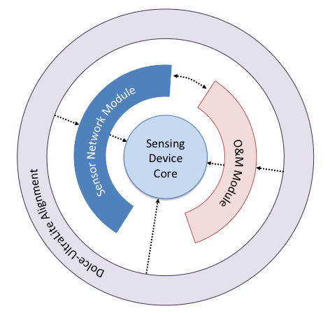

The Semantic Sensor Network Ontology (commonly known as "SSN" or sometimes "SSNO") is an OWL-2 DL ontology for describing sensors and the observations they make of the physical world. SSN is published in a modular architecture that supports the judicious use of "just enough" ontology for diverse applications, including satellite imagery, large scale scientific monitoring, industrial and household infrastructure, citizen observers, and Web of Things. SSN is described and examples of its use are given.
The namespace for SSN terms is http://www.w3.org/ns/ssn/
This section describes the status of this document at the time of its publication. Other documents may supersede this document. A list of current W3C publications and the latest revision of this technical report can be found in the W3C technical reports index at http://www.w3.org/TR/.
This is the first published version of the SSN since its original publication by the SSN-XG, the Semantic Sensor Network Incubator Group of the W3C. This is a very incomplete draft to indicate the scope and style of changes proposed to be made to the original SSN. This document is both incomplete and inconsistent, but is being published at this stage to solicit comment from the community of SSN users and would-be users.
For OGC This is a Public Draft of a document prepared by the Spatial Data on the Web Working Group (SDWWG) — a joint W3C-OGC project (see charter). The document is prepared following W3C conventions. The document is released at this time to solicit public comment.
Publication as a First Public Working Draft does not imply endorsement by the W3C Membership. This is a draft document and may be updated, replaced or obsoleted by other documents at any time. It is inappropriate to cite this document as other than work in progress.
Sensor observations are a major source of data published on the Web. Yet, publishing, searching, reusing, and integrating this data requires more than just the observation values. Of equal importance is information about the studied feature of interest, such as a river, the observed property, such as flow velocity, and the sampling strategy. The sampling location, instrumentation, and information about the deployment of the instruments on a sensor platform may also be required for proper interpretation. OGC's Sensor Web Enablement standards [SWE] provide a means to annotate sensors and their observations. However, these standards are not yet integrated and aligned with paradigms such as Linked Data and
W3C Semantic Web technologies more generally, that are believed to be a key driver for creating and maintaining a global and densely interconnected graph of data. The W3C Semantic Sensor Network Incubator
Group (SSN) addressed these issues by developing an ontology that spans over multiple OGC standards and other specifications to support the semantic lifting of observations together with data about the sensors and their capabilities, deployment information, and so forth. Based on this initial work, the following document specifies a revised, modularized, and extended version of the SSN [SSNO].
2. Developments since the initial 2009 publication of SSN
The namespace has changed to a permanent W3C address.
The DOLCE ultralite ontology [DUL] was previously imported into SSN and many SSN terms inherited from DUL terms. This has been redesigned into two separate ontology modules so that SSN can be used quite independently of DUL if desired. Those parts of SSN that use DUL terms have been separated into the SSN
Alignment with DUL ontology.
Class Sensor has been moved up to become a direct subclass of dul:Object instead of dul:PhysicalObject. This is not expected to affect existing uses of SSN due to dul:Object being a direct parent of DUL:PhysicalObject. This is to clarify a popular misunderstanding of the intended scope of ssn:Sensor which is correctly documented in the unaltered rdfs:comment property.
A thorough check on annotation properties is yet to be made.
3. Modularisation
This section is non-normative.
One of the major issues practitioners raised with the Semantic Sensor Network Ontology as defined in the XG is its complexity, partly due to the layering underneath the DOLCE UltraLite Upperlevel ontology. This section explains the rationale and method for modularisation of the SSN.
Ontology modularisation is a common method investigated in ontology engineering to segment an ontology into smaller parts. In general, ontology modularization aims at providing users of ontologies with the knowledge they require, reducing the scope as much as possible to what is strictly necessary in a given use case. Two main categories of ontology modularization can be distinguished.
The first category comprises of approaches that focus on the composition of existing ontologies by means of integrating and mapping ontologies, most commonly through owl:import statements. OWL import has a direction from a source ontology to a target ontology, and although it is transitive, it only supports knowledge propagation in one direction, i.e. the importing ontology captures all the meaning of the imported terms used, i.e., it includes all axioms relevant to the meaning of these terms, however, the imported ontology may not capture any of the semantics of the importing ontology.
The second category comprises of mapping approaches that aim to partition and extract parts of ontologies as modules. These mapping approaches are not necessarily directional, but most approaches of ontology extraction rely on directionality of the imported modules. In fact in [Cuenca Grau et al 2009] it has been proven that in OWL DL, which is a syntactical variant of the Description Logic SHOIN, checking whether an ontology is in fact a module of an ontology given a vocabulary is an undecidable problem. However, the main feature of an ontology module under the second category is that it is self-contained, i.e., the module captures the meaning of the imported terms used by including all axioms relevant to the meaning of these terms. This means, that the result of certain reasoning tasks such as subsumption or query answering within a single module should be possible and result in the same answers without the need to access other modules of the ontology.
In order to ensure this property, a solution has to be found for concepts in the ontology module that inherit object properties from concepts that are not in the module. One solution proposed by [Cuenca Grau et al] is to include the bottom concept for all such missing concepts. Another solution is to change the domain and range of an object property. Our modularisation approach uses two different methods depending on the directionality of the segmentation.

Figure 1 gives an overview of the modules of the SSN ontology. The layering of the rings represents two methods of segmentation we distinguish, horizontal and vertical segmentation, as follows:
Vertical Segmentation
Vertical modules are built upon each other, i.e. they directionally owl:import lower level modules. If a higher level module is used without importing its lower levels it may lead to inconsistencies or at least it will lead to different answers when reasoning over the module compared to reasoning over its complete stack of vertical ontology modules. However, lower level modules are independent of their higher level modules and logically consistent. Note that higher level here is not to be confused with upper level ontologies. Upper level ontologies are general knowledge ontologies that can be directionally imported in many domains, whereas our definition of higher level ontologies here refers to an ontology that extends one or several ontology modules to capture a larger part of a knowledge domain and/or combine knowledge domains.
Horizontal Segmentation
Modules that are horizontally layered do not depend on each other, i.e. they do not rely on the import of another horizontal module to lead to the same answers when reasoning over the module itself as opposed to reasoning over an imported horizontal module. If a concept in a module is connected to a concept in another horizontally layered module through a directional property such as a subClassOf relation or any asymmetric property, the range concept of such a relation has to be included in the module using the URI of the concept as it is defined in the other module.
This presentation on modularisation is incomplete. For example, we may have that the SSN core is an RDFS-only vocabulary with modular extensions supporting both expanded terms and expanded expressiveness in the ontology language.
4. The SSN ontology
Note
Documentation in this section has been adapted from that generated by LODE from the current version of the SSN ontology (but separated from DUL). The document will be changed to reflect the developments outlined in the work plan of the SSN working group. Similarly, the diagram included here shows the current version of the ontology and will be replaced as the ontology changes.
Used to specify ranges for qualities that act as conditions on a system/sensor's operation. For example, wind speed of 10-60m/s is expressed as a condition linking a quality, wind speed, a unit of measurement, metres per second, and a set of values, 10-60, and may be used as the condition on a MeasurementProperty, for example, to state that a sensor has a particular accuracy in that condition.
The ongoing Process of Entities (for the purposes of this ontology, mainly sensors) deployed for a particular purpose. For example, a particular Sensor deployed on a Platform, or a whole network of Sensors deployed for an observation campaign. The deployment may have sub processes, such as installation, maintenance, addition, and decomissioning and removal.
Place to group all the various Processes related to Deployment. For example, as well as Deployment, installation, maintenance, deployment of further sensors and the like would all be classified under DeploymentRelatedProcess.
An observed value for which the probability of falsely claiming the absence of a component in a material is beta, given a probability alpha of falsely claiming its presence.
A device is a physical piece of technology - a system in a box. Devices may of course be built of smaller devices and software components (i.e. systems have components).
Collects together measurement properties (accuracy, range, precision, etc) and the environmental conditions in which those properties hold, representing a specification of a sensor's capability in those conditions. The conditions specified here are those that affect the measurement properties, while those in OperatingRange represent the sensor's standard operating conditions, including conditions that don't affect the observations.
The set of values that the sensor can return as the result of an observation under the defined conditions with the defined measurement properties. (If no conditions are specified or the conditions do not specify a range for the observed qualities, the measurement range is to be taken as the condition for the observed qualities.)
The time between a request for an observation and the sensor producing a result (not including network latency to retrieve the result, just time from request to measurement.).
An Observation is a Situation in which a Sensing method has been used to estimate or calculate a value of a Property of a FeatureOfInterest. Links to Sensing and Sensor describe what made the Observation and how; links to Property and Feature detail what was sensed; the result is the output of a Sensor; other metadata details times etc.
The value of the result of an Observation. An Observation has a result which is the output of some sensor, the result is an information object that encodes some value for a Feature.
An identifiable characteristic of the environmental and other conditions in which the sensor is intended to operate. May include power ranges, power sources, standard configurations, attachments and the like.
The environmental conditions and characteristics of a system/sensor's normal operating environment. Can be used to specify for example the standard environmental conditions in which the sensor is expected to operate (a Condition with no OperatingProperty), or how the environmental and other operating properties relate: i.e., that the maintenance schedule or power requirements differ according to the conditions.
An Entity to which other Entities can be attached - particularly Sensors and other Platforms. For example, a post might act as the Platform, a buoy might act as a Platform, or a fish might act as a Platform for an attached sensor.
The closeness of agreement between replicate observations on an unchanged or similar quality value: i.e., a measure of a sensor's ability to consitently reproduce an observation.
An observable Quality of an Event or Object. That is, not a quality of an abstract entity as is also allowed by DUL's Quality, but rather an aspect of an entity that is intrinsic to and cannot exist without the entity and is observable by a sensor.
Selectivity is a property of a sensor whereby it provides observed values for one or more qualities such that the values of each quality are independent of other qualities in the phenomenon, body, or substance being investigated.
The description of a process (i.e. describes the temporal and dataflow dependencies and relationships amongst its parts) that results in the estimation, or calculation, of the value of a phenomenon.
4.2.28 Sensing Device
http://www.w3.org/ns/ssn/SensingDevice
A sensing device is a device that implements sensing.
A sensor can do (implements) sensing: that is, a sensor is any entity that can follow a sensing method and thus observe some Property of a FeatureOfInterest. Sensors may be physical devices, computational methods, a laboratory setup with a person following a method, or any other thing that can follow a Sensing Method to observe a Property.
A data sheet records properties of a sensor. A data sheet might describe for example the accuracy in various conditions, the power use, the types of connectors that the sensor has, etc. Generally a sensor's properties are recorded directly (with hasMeasurementCapability, for example), but the data sheet can be used for example to record the manufacturers specifications verses observed capabilites, or if more is known than the manufacturer specifies, etc. The data sheet is an information object about the sensor's properties, rather than a direct link to the actual properties themselves.
4.2.32 Sensor Output
http://www.w3.org/ns/ssn/SensorOutput
A sensor outputs a piece of information (an observed value), the value itself being represented by an ObservationValue.
An Event in the real world that 'triggers' the sensor. The properties associated to the stimulus may be different to eventual observed property. It is the event, not the object that triggers the sensor.
An identifiable characteristic that represents the extent of the sensors useful life. Might include for example total battery life or number of recharges, or, for sensors that are used only a fixed number of times, the number of observations that can be made before the sensing capability is depleted.
The conditions a sensor can be exposed to without damage: i.e., the sensor continues to operate as defined using MeasurementCapability. If, however, the SurvivalRange is exceeded, the sensor is 'damaged' and MeasurementCapability specifications may no longer hold.
System is a unit of abstraction for pieces of infrastructure (and we largely care that they are) for sensing. A system has components, its subsystems, which are other systems.
Has part relation between a deployment process and its constituent processes.
4.3.5 detects
http://www.w3.org/ns/ssn/detects
A relation from a sensor to the Stimulus that the sensor can detect. The Stimulus itself will be serving as a proxy for (see isProxyOf) some observable property.
A relation between an observation and the entity whose quality was observed. For example, in an observation of the weight of a person, the feature of interest is the person and the quality is weight.
A relation between some aspect of a sensing entity and a property. For example, from a sensor to the properties it can observe, or from a deployment to the properties it was installed to observe. Also from a measurement capability to the property the capability is described for. (Used in conjunction with ofFeature).
4.3.9 has deployment
http://www.w3.org/ns/ssn/hasDeployment
Relation between a System and a Deployment, recording that the System/Sensor was deployed in that Deployment.
The chain here ensures that the observed property of an observation is a property of the feature of interest. This restriction is written in O&M; here we can enforce it formally. The more obvious formulation: featureOfInterest o hasProperty SubPropertyOf observedProperty can't be used, because (by the OWL2 decidability restrictions) that would mean cardinality restrictions couldn't be applied to observedProperty (see definition of Observation).
Relation from a SurvivalRange to a Property describing the survial range of a system. For example, to the temperature extreme that a system can withstand before being considered damaged.
A relation between the description of an algorithm, procedure or method and an entity that implements that method in some executable way. For example, between a scientific measuring method and a sensor the senses via that method.
A relation between an entity that implements a method in some executable way and the description of an algorithm, procedure or method. For example, between a Sensor and the scientific measuring method that the Sensor uses to observe a Property.
Describes the prevailing environmental conditions for MeasurementCapabilites, OperatingConditions and SurvivalRanges. Used for example to say that a sensor has a particular accuracy in particular conditions. (see also MeasurementCapability)
4.3.22 in deployment
http://www.w3.org/ns/ssn/inDeployment
Relation between a Platform and a Deployment, recording that the object was used as a platform for a system/sensor for a particular deployment: as in this PhysicalObject is acting as a Platform inDeployment Deployment.
A relation from a Stimulus to the Property that the Stimulus is serving as a proxy for. For example, the expansion of the quicksilver is a stimulus that serves as a proxy for temperature, or an increase or decrease in the spinning of cups on a wind sensor is serving as a proxy for wind speed.
4.3.27 made observation
http://www.w3.org/ns/ssn/madeObservation
Relation between a Sensor and Observations it has made.
is inverse of
observedBy
4.3.28 observation result
http://www.w3.org/ns/ssn/observationResult
Relation linking an Observation (i.e. a description of the context, the Situation, in which the observatioin was made) and a Result, which contains a value representing the value associated with the observed Property.
4.3.29 observation result time
http://www.w3.org/ns/ssn/observationResultTime
The result time shall describe the time when the result became available, typically when the procedure associated with the observation was completed For some observations this is identical to the phenomenonTime. However, there are important cases where they differ.[O&M]
4.3.30 observation sampling time
http://www.w3.org/ns/ssn/observationSamplingTime
Rebadged as phenomenon time in [O&M]. The phenomenon time shall describe the time that the result applies to the property of the feature-of-interest. This is often the time of interaction by a sampling procedure or observation procedure with a real-world feature.
4.3.31 observed property
http://www.w3.org/ns/ssn/observedProperty
Relation linking an Observation to the Property that was observed. The observedProperty should be a Property (hasProperty) of the FeatureOfInterest (linked by featureOfInterest) of this observation.
A relation between some aspect of a sensing entity and a feature. For example, from a sensor to the features it can observe properties of, or from a deployment to the features it was installed to observe. Also from a measurement capability to the feature the capability is described for. (Used in conjunction with forProperty).
4.3.34 on platform
http://www.w3.org/ns/ssn/onPlatform
Relation between a System (e.g., a Sensor) and a Platform. The relation locates the sensor relative to other described entities entities: i.e., the Sensor s1's location is Platform p1. More precise locations for sensors in space (relative to other entities, where attached to another entity, or in 3D space) are made using DOLCE's Regions (SpaceRegion).
The chain here means that if a sensor made an observation and that observation has a result, then the result is the one produced by the sensor. Just ensures that the sensor and the resulting observation agree on the result.
Relation linking an Observation to the adjudged quality of the result. This is of course complimentary to the MeasurementCapability information recorded for the Sensor that made the Observation.
A (measurement) procedure is a detailed description of a measurement according to one or more measurement principles and to a given measurement method, based on a measurement model and including any calculation to obtain a measurement result [VIM 2.6]
Check and reconsider or redesign modularisation of SSN. See proposal in charter: noting the work to split the ontology into smaller sections to offer simplified access
Modularisation of SSN might work like some of the following suggestions under discussion
Clearly separate observation, sensor, and deployment parts.
Disentangling SSN from DUL may require adding things to SSN that were otherwise needed from DUL, for example, measured values.
How do we replace those components of dul that seem to be core to ssn if dul is not being used?
Consider O&M alignment (see O&Mlite). Assuming the DUL separation above works well, the O&M alignment could be handled the same way. There is a known issue with incompatibility with SSN+DUL and O&M resulting from a difference in modelling observations.
What goes in SSN and what should be just a recommended profile/extract/extension? These could include e.g. WoT? Iot-lite? satellite sensors? samples? human sensors? Or do we just advise how to do this in general?
Two such alignments have already been published in the literature. One proposal functions mostly rather like the alignment to DUL as described above in form, but some rather useful SWRL is also used.
This alignment is necessary, at least, for the common use case of sensored time-series. There are a few examples in the literature, but it is suggested that some structural change to core SSN is needed to make this work. This needs to be considered in the context of the DUL disentanglement above because the encoding of measured values is important here. Observed properties also need to be checked.
This could be achieved by defining a small SSN module that is suitable for small devices; by adopting IoT-lite or some other IoT ontology with a well-defined relationship to SSN (ie a formalised alignment). There are suggestions to reduce memory by short uris and labels (and annotations?), too.
In this context actuation is a clear need and should be considered.
The user should be able to understand the network resource cost of proposed instructions (for example, power required per measurement, current battery life, latency before instructions can be executed). These qualities could be interpreted by the scientist user directly, or by an automated agent aiming to optimize network efficiency through resource scheduling and optimisation algorithms.
Align SSN with the ontology developed for the coverage deliverable
We would like to show that the sensors that observe coverage (commonly satellite, but could be in-situ ground-based sensors) can be described using SSN while their observations can be described via the SDW coverage deliverable.
Extend SSN to cover requirements identified in our UCR
These should be done by optional extensions to SSN, in the style of the optional DUL alignment above, so as to minimally impact existing users and to avoid overcrowding of the core. The requirements are recorded in the UCR
document
Align SSN to implement Best Practices as defined in our BP deliverable.
In particular, the modelling of time and space should concur. SSN should tighten its modelling of location. There are relevant UCR requirements for this.
Extend SSN to to cover requirements identified in our wish List. These requirements have not been discussed in the group and are subject to prioritisation and resources.
See the Wish list on the Group's
wiki. Of those, what is not covered elsewhere in this document is reproduced briefly here. Refer to the wish list for more detail, rationale and possible implementations.
CSV data encoding
JSON data encoding
More help for observed value encoding (although this overlaps somewhat with issues above)
This is a note of some proposed documentation, resources permitting.
Success Stories (also called use cases) as a way to understand whether SSN is the right tool for the job
Tutorial Introduction to SSN and documentation for new users in general. Make a video version of the tutorial. (Given the expected user group for all the outputs of this WG, this idea should really extend to all the deliverables of the WG)
Reasoning and other Inference SSN uses lots of OWL that enables reasoning support for clever stuff. This should be explained (how to leverage it?).
We have agreed to publish an accompanying Primer that will show how to use SSN tutorial-style and will include advice on how to use the DUL alignment.
Michael Compton; Payam Barnaghi; Luis Bermudez; Raúl García-Castro; Oscar Corcho; Simon Cox; John Graybeal; Manfred Hauswirth; Cory Henson; Arthur Herzog; Vincent Huang; Krzysztof Janowicz; W. David Kelsey; Danh Le Phuoc; Laurent Lefort; Myriam Leggieri; Holger Neuhaus; Andriy Nikolov; Kevin Page; Alexandre Passant; Amit Sheth; Kerry Taylor. Web Semantics: Science, Services and Agents on the World Wide Web, 17:25-32 . The SSN ontology of the W3C semantic sensor network incubator group. December 2012. URL: http://www.sciencedirect.com/science/article/pii/S1570826812000571